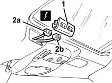
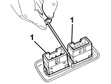

7030B62 sliding roof control switch (1) front rear - r r
- Path
- Procedures > 70 FITTINGS > 7030 SUN ROOF AND HOOD > 7030B sliding roof > 7030B62 sliding roof control switch (1) front rear - r r
- Kind
- repair procedure (removal / refitting; the operation number is the code)
- Applies to
- all engines; all production periods
- Interactive page
- https://sloeber94.github.io/elrnDB-fMltpl/en/#/2892151
Applies to: all engines; all production periods
 Removing
Removing
 Refitting
Refitting1. Remove the switch unit.
2. Disconnect the electrical connections (2a,2b) and set aside the switch unit.
 | Name | Connector |
|---|---|---|
2a | Front sun roof switch |
| Name | Connector |
|---|---|---|
2b | Rear sun roof switch from front seats |

Applies to: all engines; all production periods
1. If necessary, remove the switches from the embellishment and set them aside.

Applies to: all engines; all production periods
Refitting
RemovingCheck that the switches are not damaged.
If necessary, conduct an electrical test on the switches.
If removed, fit the switches in the trim.
Connect the electrical connections to the switches.
Fit the switch unit in its seating.
Check that the switches are working.
Topics linked from this page (2)
Topics that link to this page (6)
- 7030B06 sliding rooves (assemblies) - r r
- 7030B11 sliding roof(assembly, 1 front or rear - r r )
- 7030B20 sliding roof glass front or rear - r r
- 7030B23 MOULDING/SUPPORT seal for SLIDING ROOF GLASS PANEL, Front or Rear - R.R.
- 7030B24 sliding roof blind,front or rear - r r
- 7040H16 roof panel lining - r r